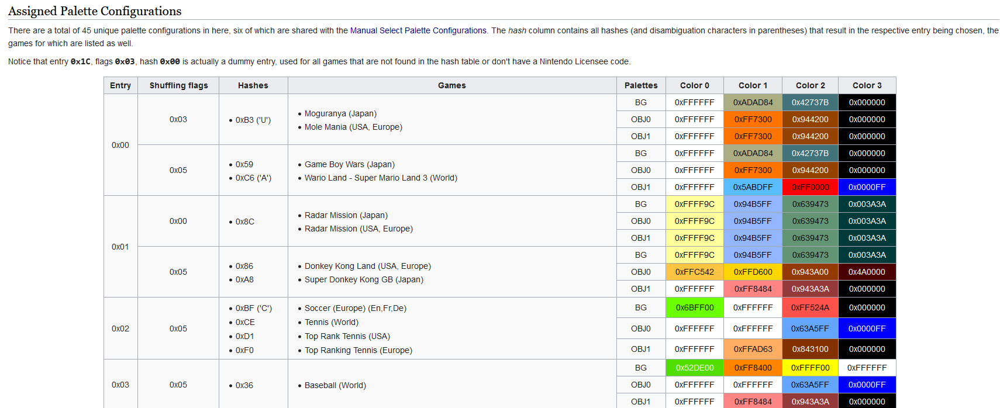

How the Game Boy Color colors regular Game Boy games
major shoutout to all the websites that helped me make sense of this! you will be able to find them at the bottom of the page.
today it is time to answer the question that has been bugging all of us since 1998: how exactly does the gameboy color (gbc) color regular gameboy (gb) games?
its a lookup table. inside the bootstrap rom (which is a hardcoded set of instructions burnt inside the cpu of the gbc), there is a table with a bunch of hardcoded palettes for lots of games. you can also manually pick from a few palettes if you want to do that for some reason. however, nintendo has a problem. the bootstrap is way too small; they only have ~100 bytes of free space to work with1, which means that nintendo will need to innovate and find a space-efficient way to give a lot of gb games a lot of colors. so, how did they do it? well, thats where it gets fun.
the gbc computes a hash of the rom's header (where identifying data is provided so the gb/c [both the gameboy and the gameboy color] know wtf this game is. this is also where the nintendo boot logo is stored2) title (which is.. the title given inside the rom header! groundbreaking, i know) and then compares it to the table. the way the title checksum works is that it adds up all of the bytes inside the title field together, but it only keeps the 8 lowest bits. for instance, tetris' title field would be TETRIS -- 54 45 54 52 49 53 (with a bunch of zeroes to pad the field out), add them up and you get 475. however, since the checksum has to fit into one byte, we have to fit 475 into one byte. mod 256 and youre left with 219, or 0xDB3 (which you can cross-reference with the tcrf table and find out that i did the math right). now, we can check which palette our tetris game got. as far as i know, the table itself was hand-coded by nintendo staff. now, please take a look at the tcrf table i posted a link to exactly one sentence ago. or here's a picture of it, if you'd rather have that:

you'll notice that there are quite a few fields. 'hashes' is obtained via the checksum we just did, 'games' and 'palettes' are pretty self-explanatory, so what's up with 'entry' and 'shuffling flags'?
each entry value is assigned 4 colors4 per layer. layers? layers are what the gb/c use to draw the things happening on the screen, and there are 4 of them, which go as follows:
- window (win), which typically draws the UI elements and windowed (hence, window) menus.5
- background (bgo), which draws the.. background!
- object 0 (obj0) and object 1 (obj1) are used to draw everything else, such as player sprites, enemy sprites, power-ups.. there is no difference between the two that i know of. it is worth noting that while obj0 and obj1 DO have four colours, color #1 will always be set to transparency, meaning that it effectively doesnt exist.
the shuffling flags will.. shuffle! these palettes. it essentially just gives the gbc the instruction to paste a layer's palette onto another layer; for instance, shuffling flag value 0x05 will cause all 3 color palettes to be used on their own, in their respective layer, while 0x036 will cause both obj palettes to use obj0's palette. i dont really know why this exists?
so, this is how nintendo was able to color a whole lot of gb games in a pretty clever and space-efficient way. pretty slick!
1 once the bootstrap program is done, it points to $100, which is where it gives control over to the cartridge rom. most gb games are built with the expectation of starting at byte 100, so if nintendo goes over it theyre super fucked.
2 this is unrelated to the gbc but i wanted to talk about it. if the bytes that draw the nintendo logo dont match up exactly with what the gb is expecting, the console seizes up. this is also why booting up a gb with no cartridge yields a black screen where the nintendo logo should be. originally, this was meant to be an anti-piracy measure, but it had no weight in the us court of law, which ruled that nintendos competitors (bootleggers) were allowed to use the nintendo trademark in an attempt to reverse-engineer nintendos code and that itd fall under fair use. anyways, there is a way to circumvent the logo check entirely! the gb actually does two checks: one to display the logo, and then another one to check if the logo is valid. such that, we can display our cool custom logo on the first pass, and then internally have the nintendo logo so the gb valids the game and lets it boot. check this shit.
3 i didn't know where to fit this organically in the text, but it's an important note. let's assume that we did this, but for tetris 2 instead! since nobody got time for all that, let's just look it up on the table. there, we find that it says 0x0D ('R'). why is there an 'R' there? well, its because another game -- Pocket Bomberman (Europe) -- has an identical hash output of 0x0D ('E', this time). the way the gbc differentiates the two is by checking the fourth letter of each game (if you're wondering why bomberman's 4th letter is E, the reason is that it's named POKEBOM in the title header). i.. dont know what happens if two games have an identical checksum and an identical 4th letter? i assume that it has never happened, and that if it did, they just got the same palette or something.
4 4 colors, for the 4 different shades of grey the gb was capable of outputting.
5 the win layer directly inherits bgos color palette and doesnt have one of its own. i presume that this was a space-saving measure?
6 shuffling flags 0x06 and 0x07 (heh) are unused because they would be redundant.
in an absolute defiance to everything i stand for, instead of ragging on and on about game boy color cartridges, i will end the post right here, because what i wanted to talk about is finished! i will leave you with this piece of information, however: pokemon puzzle challenge is a gbc-exclusive pokemon panel de pon ripoff. whats cool about this game is that, if you put it into a regular gb, and press a 24 times, and then press b 24 times, it will unlock a secret colorless game. do what you want with this info.
massive shoutout to tcrf, without whose ridiculously dense 2-phrase note on one of the titles in the notes page i wouldnt have been able to figure any of this out: https://tcrf.net/Game_Boy_Color_Bootstrap_ROM
this site has some nice reference pictures to help visualize the concepts of this post: https://tirodvd.wordpress.com/2015/01/27/coloring-gameboy-layers/, although i would be wary of the implementation section.
the cool bootscreen hack thing: https://dhole.github.io/post/gameboy_custom_logo/
i probably read up on other websites i forgot about! sorry!